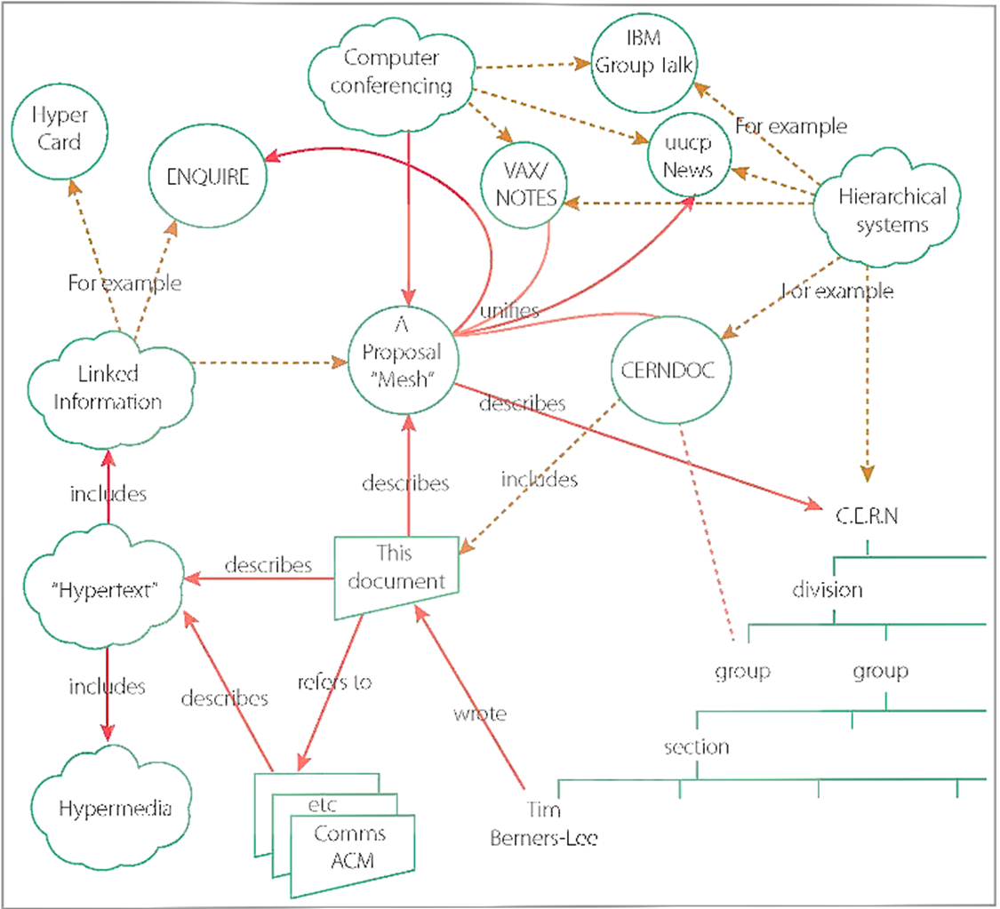

Các chuẩn HTML của trang web hiện nay được nhà vật lý Tim Berners-Lee đưa ra lần đầu tiên vào những năm 1990 của thế kỷ XX tại trung tâm vật lý hạt nhân CERN.
Ý tưởng ban đầu của Berners-Lee là muốn thiết lập một chuẩn chung để thể hiện và chia sẻ các văn bản có thể trao đổi bên trong cơ quan CERN.
Hình ảnh sau là sơ đồ thông tin mà Tim Berners-Lee đưa ra lần đầu tiên để minh họa cho ý tưởng của mình. Trong sơ đồ này lần đầu tiên xuất hiện cụm từ “hypertext” (siêu văn bản).
Phiên bản đầu tiên của HTML được thiết lập vào cuối năm 1991 mang tên “các thẻ HTML” văn bản này do chính Tim Berners-Lee biên soạn.
Từ đó các phiên bản tiếp theo của HTML lần lượt ra đời cùng với sự phát triển của công nghệ internet.
Phiên bản hiện tại là HTML5, ra đời năm 2014.
Quay về trang chủ